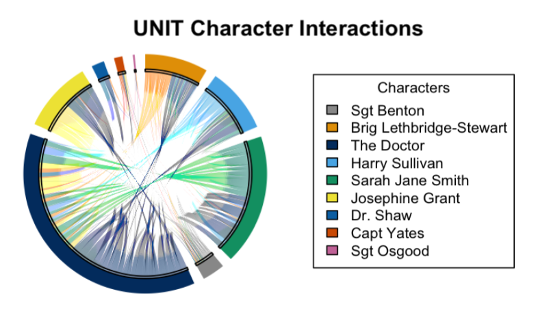
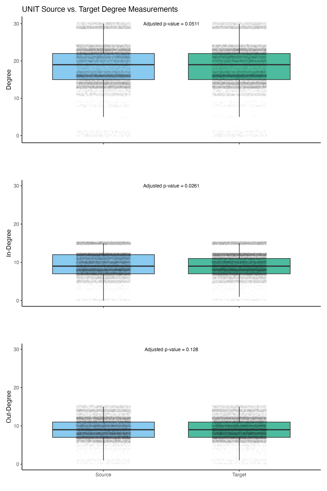

UNIT Chord Diagram

At right is a chord diagram generated with the circlize and ComplexHeatmap packages in R depicting all interactions from my dataset with a source and a target employed by UNIT (the United Nations Intelligence Taskforce — later renamed the United Intelligence Taskforce), a military organization that featured prominently in many Third Doctor and some early Fourth Doctor serials before it was written out of the show. Interactions with certain characters (e.g. Dr. Elizabeth Shaw) are undersampled because I have not collected data from their entire run.
Comparison of UNIT Characters' Degrees
A character's degree is the sum of their in-degree (the number of interactions other characters direct to them) and out-degree (the number of interactions they direct to other characters). I generated these boxplots with the ggplot2 package in R. They display the same subset of data as the chord diagram above; every interaction in this subset includes a source and target from UNIT. The adjusted p-values displayed above each boxplot are p-values adjusted with a Bonferonni correction after I ran the following one-tailed t-tests in R:

Source degree vs. target degree:
Null hypothesis: source degree = target degree
Alternative hypothesis: source degree > target degree
Results: The adjusted p-value indicates no significance at an alpha level of 0.05. I fail to reject the null hypothesis.
Source in-degree vs. target in-degree:
Null hypothesis: source in-degree = target in-degree
Alternative hypothesis: source in-degree > target in-degree
Results: The adjusted p-value indicates a significantly higher source in-degree at an alpha level of 0.05. I reject the null hypothesis.
Source out-degree vs. target out-degree:
Null hypothesis: source out-degree = target out-degree
Alternative hypothesis: source out-degree > target out-degree
Results: The adjusted p-value indicates no significance at an alpha level of 0.05. I failt to reject the null hypothesis
Discussion:
Source degree and target degree in interactions that feature only UNIT characters in both the source and target position are not significantly different. This indicates that UNIT characters are interacting more or less equally overall — for most characters, similar numbers of characters interact with them and they interact with similar numbers of characters.
I expect that this result can be partly attributed to the fact that this subset of my data includes tens of thousands of lines of interactions in which the source and target flip, and excludes interactions with more minor characters who are more likely to only occupy one of those positions. Essentially, these data feature the same characters in both positions more or less equally.
Source out-degree and target out-degree are also similar. This indicates that all characters in this subset of my data are initiating interactions with roughly the same number of characters the same number of times. Again, this is most likely the result of undersampling in my data; I am representing very few characters in this subset of my data.
However, source in-degree and target in-degree vary, with source in-degree being significantly higher than target in-degree at an alpha level of 0.05. I suspect that characters in positions of greater power (like higher-ranking military officials in UNIT) are receiving more communication from other characters and must initiate interactions with other individuals outside of their circle of subordinates, thus simultaneously inflating their in-degree and the number of interactions they have in which they are sources.